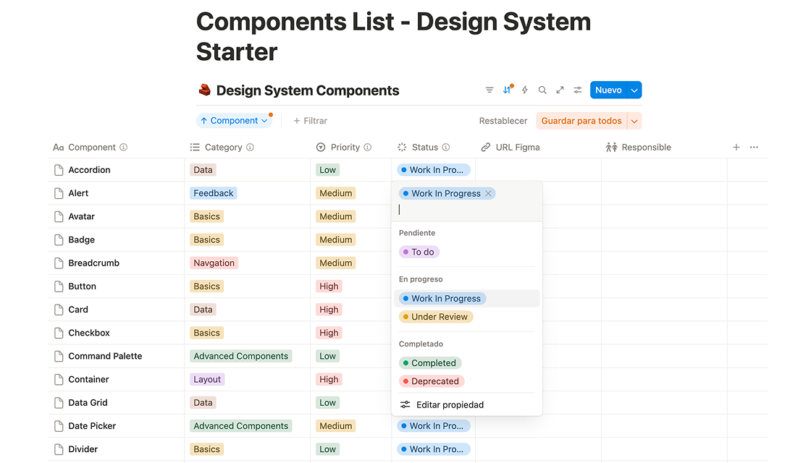
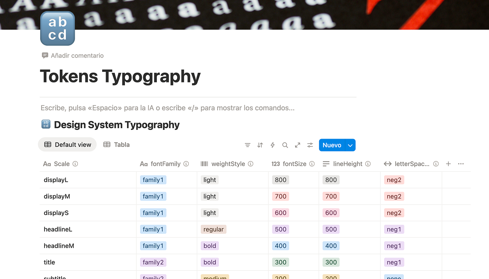
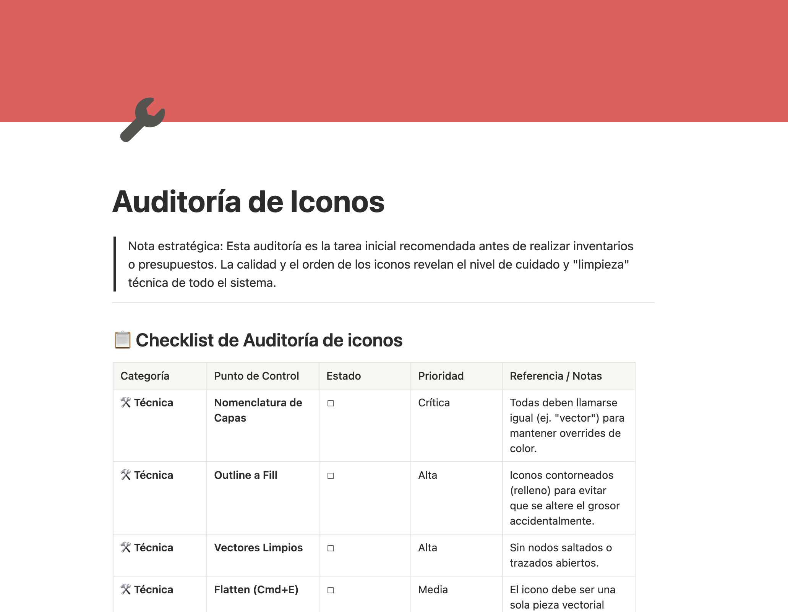
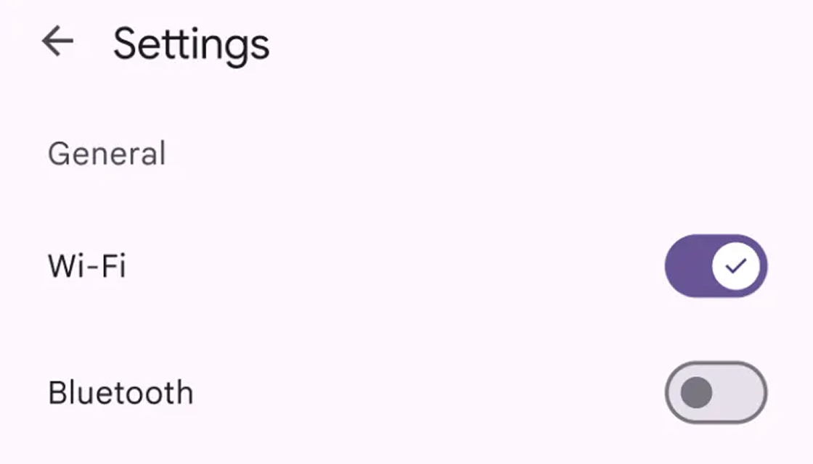
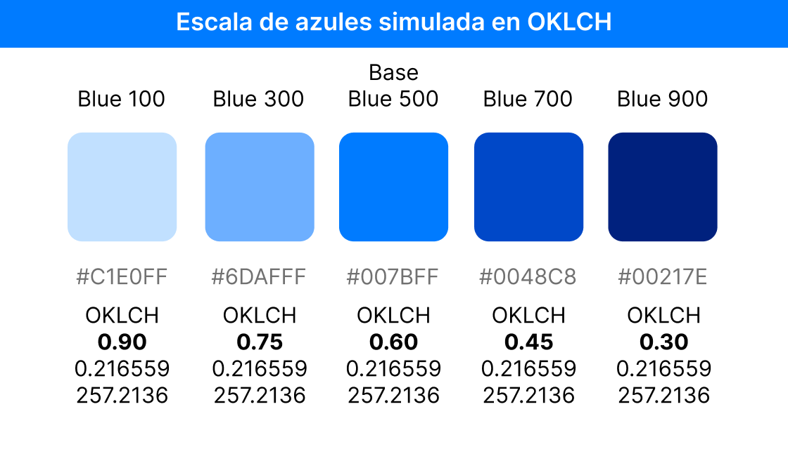
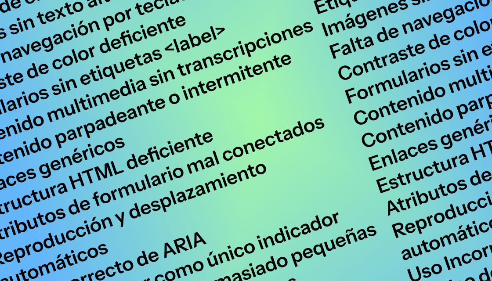
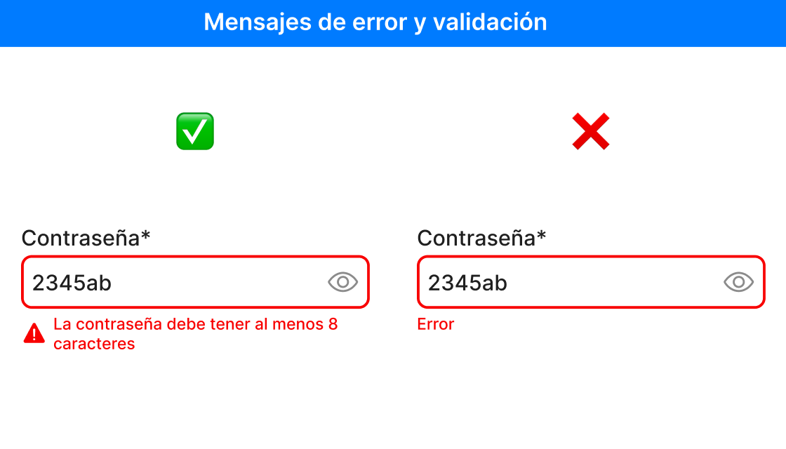
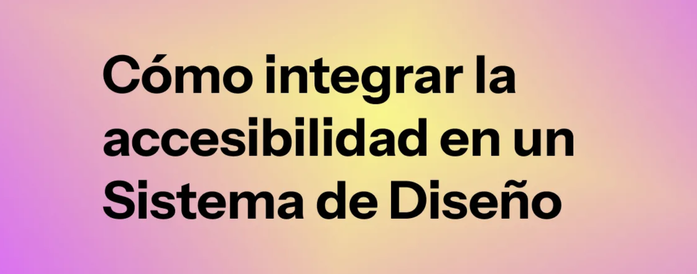

Hola, soy Luis
Sr Product Designer Design Systems Specialist
+20 años conectando diseño, desarrollo y negocio en entornos de alta exigencia. Con foco en accesibilidad, escalabilidad y DesignOps.
Mi enfoque
Aquí no encontrarás case studies.
Los proyectos que me han hecho crecer están bajo NDA, pero eso no va a impedir que veas cómo trabajo.
Este espacio reúne lo que construyo por iniciativa propia.
Plugins, herramientas, artículos y recursos para la comunidad. Proyectos reales, concebidos, dirigidos y afinados por mí, con la IA como apoyo. Material suficiente para entender cómo pienso, cómo tomo decisiones y si tiene sentido que hablemos.
Aún así, si quieres ver algún case studie de proyectos anteriores, écha un vistazo a mi antigua web porfolio 👉 Case studies anteriores.
01 — Experimentos con IA
Productos que
he construido
Auditoría Pluxee
Auditoría UI del sitio Pluxee.com. Revisamos color, tipografía, espaciado, contraste, tokens, botones y recomendaciones de optimización...
Auditoria UIScreen Reader Order
Plugin de Figma que muestra cómo los lectores de pantalla leen tus diseños. Detecta problemas de accesibilidad, permite reordenar elementos con drag & drop y exporta la documentación para desarrollo.
Figma PluginPortfolios: ¿Qué quieren ver?
Encuesta y Dashboard sobre porfolios UX/UI, desde el punto de vista del que contrata (Recruiters & Design Managers).
Dashborad Open SourceDua Dupla DS
Sistema de Diseño creado 100% con la colaboración honesta entre IA y Humano.
Design System02 — Recursos
Aportaciones a
la comunidad

Components List - Design System Starter
Plantilla de seguimiento del estado de componentes de un Sistema de Diseño.

Tokens Typography
Tabla para configuración de tokens tipográficos de un Sistema de Diseño.

Auditoría de Iconos
Checklist para auditar iconos de un Sistema de Diseño.

Auditoría de Iconos
Conoce los pasos a tener en cuenta para auditar los iconos de un Sistema de Diseño.

Cómo diseñar el Toggle/Switch perfecto
El Toggle es uno de los componentes más comunes en un sistema de diseño. Pero también uno de los más mal usados, mal interpretados, y muchas veces, mal diseñados.

La realidad del color en los Design Systems (OKLCH vs HSL+Hex)
Artículo que explica por qué deberías adoptar el OKLCH y decir adiós a Hex y HSL en tu Sistema de Diseño.

Los 20 errores de Accesibilidad más comunes, y cómo arreglarlos
Se habla de UX/UI como la clave para crear productos exitosos. Pero si ignoras la Accesibilidad, hasta el diseño más brillante se viene abajo.

Accesibilidad en formularios: Lo que SÍ y lo que NO debes hacer
Si estás diseñando un producto digital y este tiene formularios, o campos de entrada de datos, la accesibilidad es fundamental.

Cómo integrar la Accesibilidad en un sistema de diseño
Cómo integrar la accesibilidad en cada capa de un DS, con ejemplos prácticos, errores comunes y cómo corregirlos.
Los "snowflakes" de un Sistema de Diseño
En un Design System, se llama "snowflake" a una instancia de componente del sistema que ha sido modificado de forma única para un caso de uso muy específico.
03 — Sobre mí
Un poco de
contexto
+25 años diseñando productos digitales. Vengo de la publicidad y la dirección creativa, pero encontré mi sitio en el diseño de producto.
He trabajado con equipos de producto en compañías como Volkswagen Group, BBVA, Orange, Openbank, Andbank, Viajes El Corte Inglés o Atresmedia, siempre en contextos donde el diseño necesita escalar sin perder coherencia.Mi foco actual es reducir la fricción entre diseño y desarrollo: Design Systems que se usan de verdad, tokens sincronizados y documentación que no caduca al día siguiente.
Fuera del trabajo, experimento con IA, escribo sobre diseño y sistemas, mentorizo a diseñadores junior (muchos acaban siendo amigos), toco la guitarra en un grupo, y sigo manchándome las manos con acrílicos y rotuladores.
Especialización
- Design Systems
- Accesibilidad
- DesignOps
- AI + Design
Certificaciones
- Design Systems Pro → Shift+R
- DesignOps → Instituto Tramontana
- Accesibilidad Digital → WeAAAre
- Scrum Master → European Scrum Org
Herramientas
- Figma | FigJam
- Claude | Chat GPT | Gemini
- GitHub | Notion
- Storybook | Zeroheight | Supernova